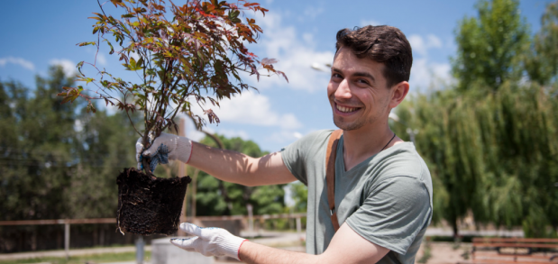
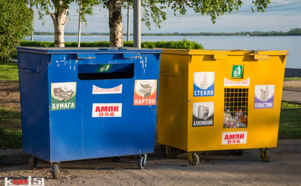

ABOUT US
This is a new age of recycling. The conception of the app is to connect eco-friendly people and recycling services to make the process of recycling easier and support Russian eco businesses and organizations. Do you want to find the nearest service to your house or quickly find if the particular material is recyclable? The app is the perfect option. Do you want to found your recycling service but are afraid that this is too difficult? Now you can set up a point on the map with a few clicks and the next day thousands of users will see it.



